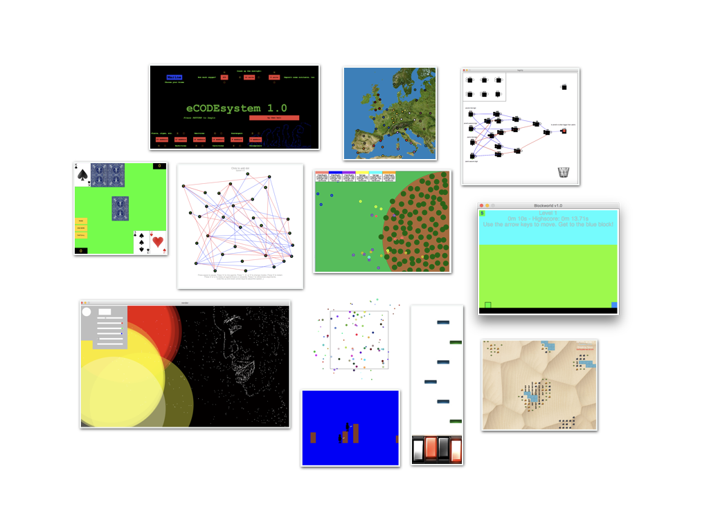

CS 1 is a class about computation, which is another way of saying that it is a class about thinking. Although you will create dozens of interactive programs in the coming year (scientific simulations, video games, text editors, digital art programs, artificial intelligences, image filters a la Instagram, website generators, and more!), coding is really just our method of choice for exploring the ideas that have animated computer science for over a century—even before there were computers!
The question we will return to again and again is this: what is the nature of thinking? Just as someone wishing to understand the nature of flight might build an airplane rather than study a bird, we’ll use programmable thinking machines—computers—to guide our inquiry, instead of studying the brain.
Of course, “What is the nature of thinking?” is quite broad, so we must focus. In this introductory course, we will investigate more specific questions, including:
How do we organize information in the world as data that we can process and transform?
How can we write down our thinking processes, so that they can be reliably replicated by others? Does it make sense to talk about elegance in this representation, smart stylistic choices that reveal common patterns in thought and larger truths about computation?
Can we create an aesthetic, outlining what it means to express thinking beautifully?
In what ways do our thinking processes generalize? That is: how do we go from concrete solutions for small problems to abstract solutions for entire classes of problems?
How do choices about process and representation affect the efficiency of our thinking?
How can we look at an informal description of a problem or solution and identify the precise computational processes underlying it?
No prior experience necessary.
Our study of computer science comprises six units and two independent projects. Project 1 is completed in December before winter break (between units 2 and 3), and Project 2 in April (between units 4 and 5). The units are:
Unit 0. How computers work.
Unit 1. A language for computation.
Unit 2. Information, data, and program design.
Unit 3. Expressing the infinite: the power of recursion.
Unit 4. When operations are data: higher-order functions.
Unit 5. Beyond Racket: mutability, objects, and imperative programming.